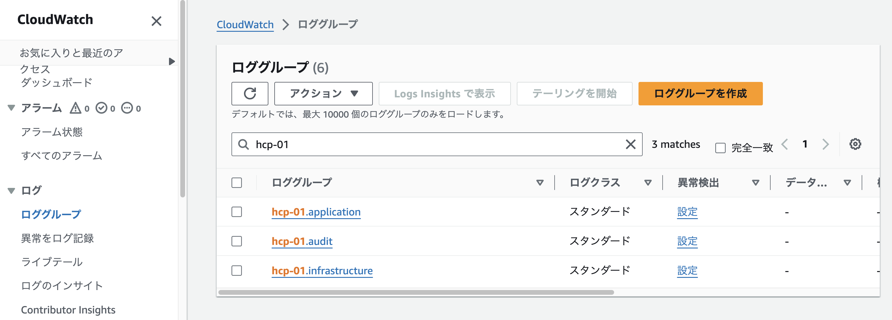
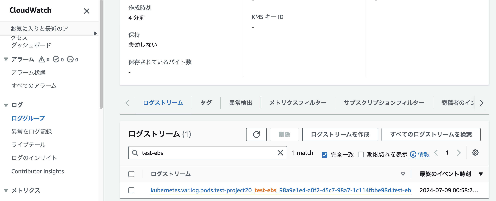
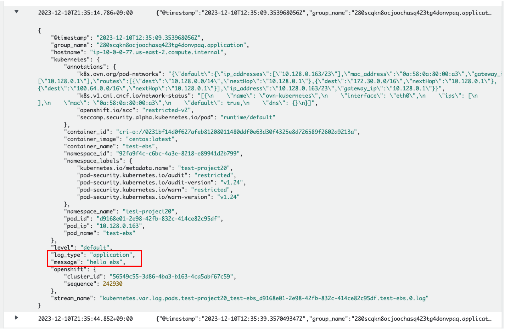

Amazon CloudWatchでのログ確認
演習の概要
このモジュールでは、Amazon CloudWatchのコンソールから、転送されたログを確認します。
Amazon CloudWatchコンソールでのログ確認
Amazon CloudWatchのコンソールにアクセスして、
ROSAクラスターのリージョン(本演習環境では東京リージョン. ap-northeast-1 )を選択します。
すると、ROSAクラスターから転送されたログのグループを確認できます。
アプリケーション(application)、監査(audit)、インフラストラクチャー(infrastructure)に関するロググループが作成されています。
| 本演習をワークショップ形式で実施している場合、AWSコンソールにアクセスするためのアカウントは、インストラクターが案内します。 |

末尾に「application」という名前が付いているロググループを選択して、ログストリームの1つを選択します。
ここでは、 test-ebs Podのログを確認することにしてみます。
各ログストリームには受講者が作成したプロジェクト名(下の画像だと、 test-project20 )が付いていますので、
自身が作成したプロジェクト名が付いたログストリームを選択します。
| 前の演習の「Cluster Log Forwarder」の設定で、 プロジェクトごとのロググループの作成や、ロググループの名前に含まれるデフォルトの接頭辞を変更する設定ができます。 具体的な設定方法については、 公式ドキュメントをご参照ください。 |

前の演習で作成した test-ebs Podは、「hello ebs」というログを30秒間隔で出力し続けており、
そのログが message の所で表示されています。
これによって、ログ転送が正常に機能していることを確認できます。

ログ転送については、他のアプリケーションをデプロイすることでも確認してみることができます。 色々試してみてください。
| こうしたログをもとに、ROSAの利用者は CloudWatchのサブスクリプションを使用したログデータのリアルタイム処理 などを実行できるようになります。 |